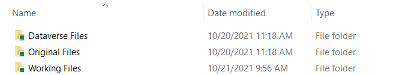
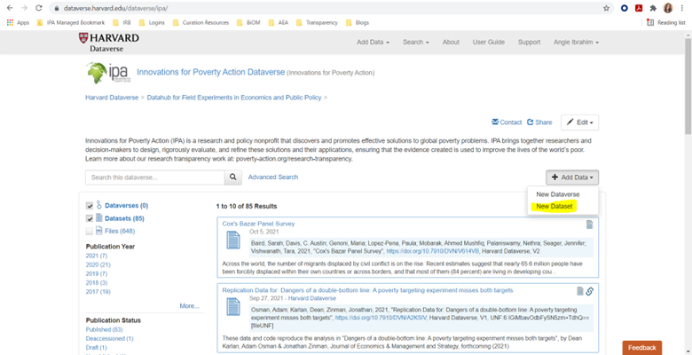
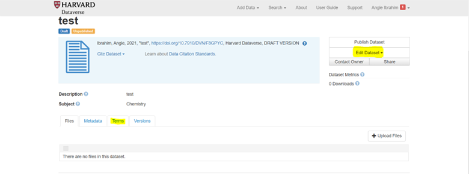
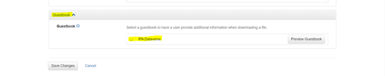
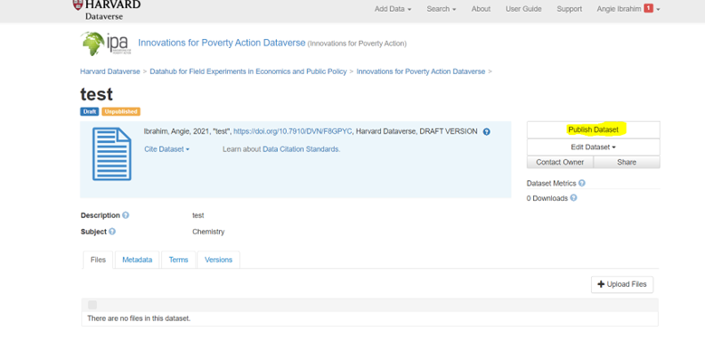

How to Publish a Replication Package to Dataverse
This how-to guide provides step-by-step instructions for curating research materials and publishing a replication package to IPA’s Dataverse.
- Set up a curation workspace with separate folders for original files, working files, and final Dataverse files.
- Remove all personally identifiable information using IPA’s PII detection tools and document your decisions.
- Verify that all code runs without errors and produces outputs matching published results.
- Complete a peer review and secondary PII check before uploading to Dataverse.
Before You Begin
This guide walks you through the data curation workflow for publishing a replication package to IPA’s Dataverse. Before starting, ensure you have:
- Access to the complete research materials (datasets, code, survey instruments)
- Access to the final publication or manuscript for comparison
- Stata installed (or the relevant statistical software used in analysis)
- A Dataverse account with permissions to upload to IPA’s repository
For background on why data sharing matters, see Understanding Research Transparency. For detailed requirements on what materials to include, see Data Publication Preparation.
Step 1: Set Up Your Curation Workspace
Create a folder structure that preserves original files while allowing you to work on modifications.
Create the Folder Structure
Within your replication folder (named with the study title and primary PI), create three subfolders:
[Study Name - PI Name]/
├── Original Files/ # Preserve unmodified copies of all received files
├── Working Files/ # Make all modifications here
└── Dataverse Files/ # Final package for publication
The “Working Files” and “Dataverse Files” folders should use the following structure:
Working Files/
├── data/
│ ├── raw/
│ ├── intermediate/
│ └── final/
├── code/
│ ├── cleaning/
│ ├── analysis/
│ └── figures-tables/
├── documentation/
│ ├── surveys/
│ ├── codebooks/
│ └── readme/
├── output/
│ ├── tables/
│ ├── figures/
│ └── logs/
└── user-commands/Curation Checklist Overview
Use this checklist to track your progress through the curation workflow:
| Task | Description |
|---|---|
| Set up project folder | Create original files, working files, and Dataverse files folders using the structure above |
| Initial PII checks | Run PII detection tools and document flagged variables |
| Code runs and checks | Verify all code runs without errors |
| Output checks | Compare code outputs against the academic paper or manuscript |
| Secondary PII checks | Run a second PII check after code modifications |
| Status update with PI | Share findings from PII checks and code runs with the research team |
| Write ReadMe | Document the replication package contents and instructions |
| Fill in metadata | Complete the metadata template for Dataverse |
| Create Dataverse entry | Set up the dataset entry with metadata and guestbook |
| Final replication test | Verify successful push-button replication |
| Upload to Dataverse | Double-compress files and upload to the Dataverse entry |
| Update project records | Add Dataverse link to project page and notify communications team |
The following sections walk through each of these tasks in detail.
Step 2: Remove Personally Identifiable Information
All datasets must be checked for and stripped of personally identifiable information before publication.
For detailed information on identifying PII, including HIPAA guidelines, detection strategies, and anonymization techniques, see Data Security Protocol: Personally Identifiable Information.
Run PII Detection
IPA provides two options for detecting PII:
PII Detection Tool: A web-based tool that checks datasets one at a time. Upload each dataset and review the flagged variables. See PII Detection Tool on GitHub for instructions.
PII Flagging Code: A Stata do-file that outputs flagged variables to a log file. You can process multiple datasets by listing them in the local macro. See split_pii on GitHub for instructions.
Document Your Decisions
For each flagged variable, record in the curation checklist (PII Checks tab):
- The variable name
- Why it was flagged
- Your decision: keep, drop, or encode
- Justification for your decision
Apply PII Removal
Based on your decisions:
- Drop variables containing PII that are not used in analysis
- Encode variables used in analysis that contain identifiable information (anonymize variable and value labels too)
- Modify specific entries in free-text fields (
_specand_othvariables) rather than dropping the entire variable when only some responses contain PII
Variables with _spec and _oth suffixes often contain free-form responses. Review these with care—they may contain PII within participant responses such as names, locations, and contact details. Modify only the entries containing PII rather than dropping the entire variable, as these responses are often informative.
Check Other Materials
Review all other materials for PII:
- Survey instruments and documentation
- Code comments and file paths
- Variable labels and value labels
- Analysis plans and reports
Step 3: Verify Code Runs Without Errors
After anonymizing datasets, verify that all analysis code runs through without breaking.
Set Up the Master Do-File
If one does not exist, create a master do-file that:
- Sets relevant globals pointing to appropriate folders
- Creates a master log file saved to the logs folder
- Documents inputs and outputs for each do-file
- Runs all cleaning, shaping, and analysis code in sequence
Example structure:
/*******************************************************************************
* Master do-file for [Study Name]
* Runs all code to reproduce paper results
*******************************************************************************/
clear all
set more off
version 17 // Specify Stata version used
* Set working directory - USER MUST UPDATE THIS PATH
global main "INSERT WORKING DIRECTORY HERE"
* Define folder paths
global data "$main/data"
global code "$main/code"
global output "$main/output"
* Start master log
log using "$output/logs/master_log.smcl", replace
* Data preparation
do "$code/01_clean_data.do"
do "$code/02_construct_variables.do"
* Analysis
do "$code/03_main_analysis.do"
do "$code/04_robustness_checks.do"
* Output
do "$code/05_tables.do"
do "$code/06_figures.do"
log closeRun and Fix Code
Run each do-file sequentially, fixing breakage as you encounter it. Common sources of code breakage include:
| Issue | Solution |
|---|---|
| Typos in variable or filenames | Correct the typo |
| User-specific file paths | Replace with globals from master do-file |
| Missing user-written commands | Install required commands (ssc install [command]) |
| Variables dropped during anonymization | Remove references or use alternative variables |
| Assert violations from changed variable counts | Update assertions to match anonymized data |
| Version incompatibility | Update syntax for current Stata version |
| Incorrect filenames | Correct the filename references |
Document Changes
Record all modifications in the curation checklist (Code Runs tab):
- Which do-file required changes
- What the original code was
- What you changed it to
- Why the change was necessary
Be cautious with modifications. Ensure changes do not alter result outputs in ways that create discrepancies between code output and reported results.
Step 4: Check for Discrepancies
When code runs completely, compare outputs to the published manuscript.
Compare Results
Check that:
- All tables can be reproduced from the code
- All figures can be reproduced from the code
- Statistical results match what is reported in the paper
Define Discrepancies
IPA defines a discrepancy as any difference greater than 0.001 between code output and published results.
Document and Resolve
For each discrepancy:
- Record it in the curation checklist (Discrepancy Checks tab)
- Flag the discrepancy to the research team
- Work with the team to resolve discrepancies where possible
- List any unresolved discrepancies in the ReadMe file
Step 5: Prepare the Final Package
Before uploading, complete final preparation steps.
Verify ReadMe File
Ensure the ReadMe includes:
- Title and authors
- Citation information
- Software requirements and version numbers
- List of user-written commands
- File structure of the replication package
- Description of each dataset
- Description of each do-file with inputs and outputs
- Any unresolved discrepancies
See Data Publication Preparation for a complete ReadMe template.
Peer Review
Have a second person who did not work on the curation:
- Run the complete replication package on their machine
- Verify that code runs without errors after updating only the main path
- Confirm outputs match the publication
Secondary PII Check
The peer reviewer should also conduct a secondary PII check to ensure no identifiable information remains in the datasets.
Prepare Files for Upload
- Copy all finalized files from “Working Files” to “Dataverse Files”
- Rename the “Dataverse Files” folder to the study title
- Compress the folder in ZIP format
- Remove the “(2)” from the final filename; filenames should be brief, descriptive, without unnecessary suffixes, and avoid spaces (use underscores, hyphens)
Double compression ensures the folder structure remains intact when users download and unzip the files from Dataverse.
Step 6: Upload to Dataverse
With your package prepared, upload to IPA’s Dataverse repository.
Create New Dataset
- Log in to IPA’s Dataverse
- Click the “+ Add Data” button on the right side
- Select “New Dataset”

Enter Initial Metadata
Fill in the metadata fields using information from the project page and publication:
| Field | Description |
|---|---|
| Title | Publication title, or study name if no publication |
| Authors | All authors with institutional affiliations |
| Description | Paper abstract or summary of intervention, methods, outcomes, and results |
| Keywords | Relevant topic keywords |
| Related Materials | Link to open-access PDF or preprint if available |
| Date of Collection | Data collection period (Start Date - End Date, YYYY - YYYY or YYYY-MM - YYYY-MM) |
| Country/Location | Countries where data was collected |
| Geographic Coverage | Specific regions, cities, or areas |
| Unit of Analysis | Individual, household, firm, etc. |
| Universe | Population from which participants were drawn |
| Kind of Data | Survey data, administrative data, etc. |
| Data Collection Methodology | How data was collected |
| Data Collector | Organization that collected data |
| Sampling Procedure | How participants were selected |
| Collection Mode | In-person, phone, online, etc. |
Upload Files
Upload the double-compressed folder when prompted to add files.
Save and Add Remaining Metadata
- Click “Save Dataset” to create the entry
- From the entry page, click “Edit Dataset” > “Metadata”
- Complete any remaining metadata fields
- Save changes

Enable Guestbook
- From the entry page, click “Terms”
- Select “Edit Terms Requirements”
- Scroll to “Guestbook” and select “IPA Dataverse”
- Save changes

Final Review and Publish
- Review all metadata for accuracy
- Confirm the guestbook is enabled
- Click “Publish Dataset”

Step 7: Post-Publication Tasks
After publishing, complete these follow-up tasks.